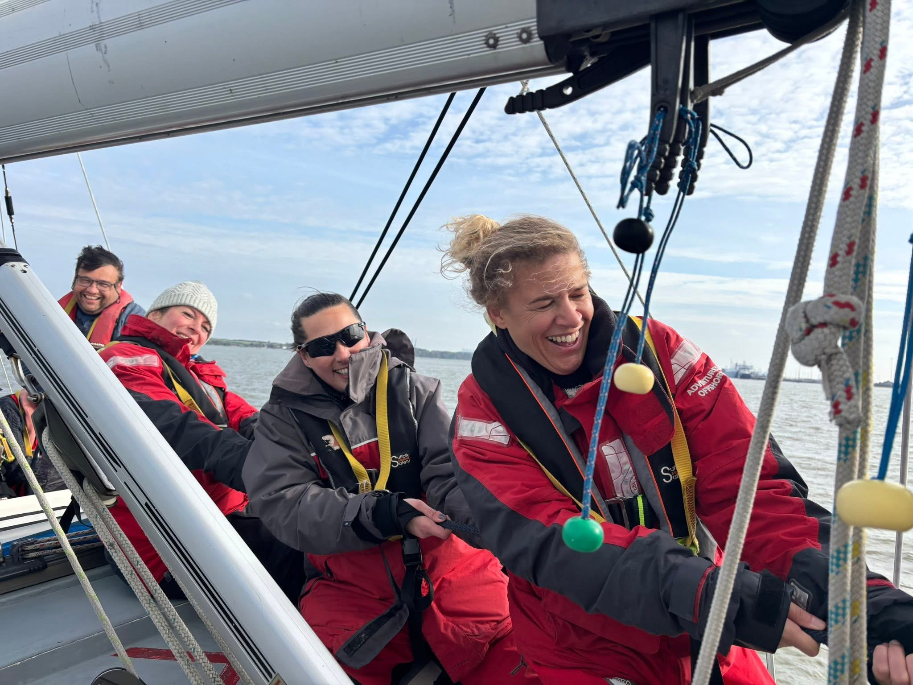
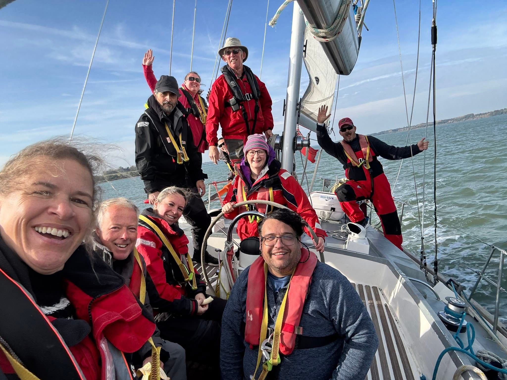
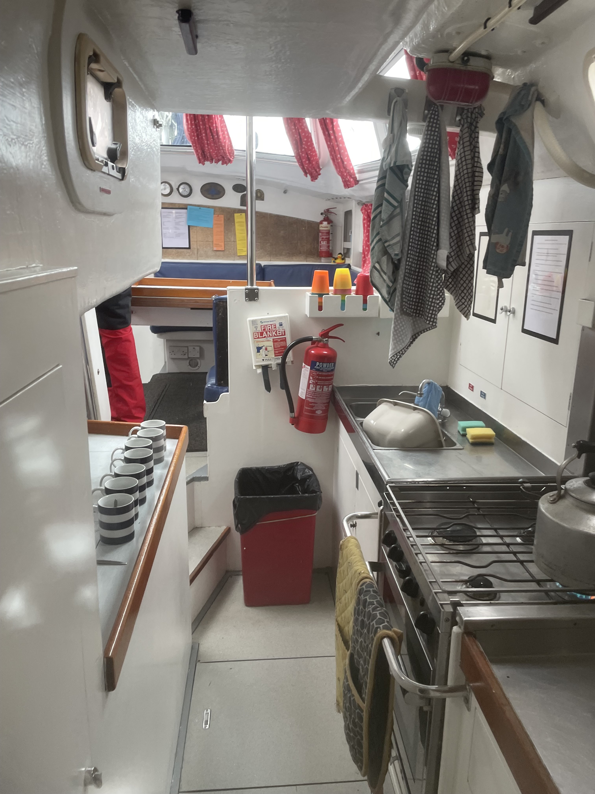
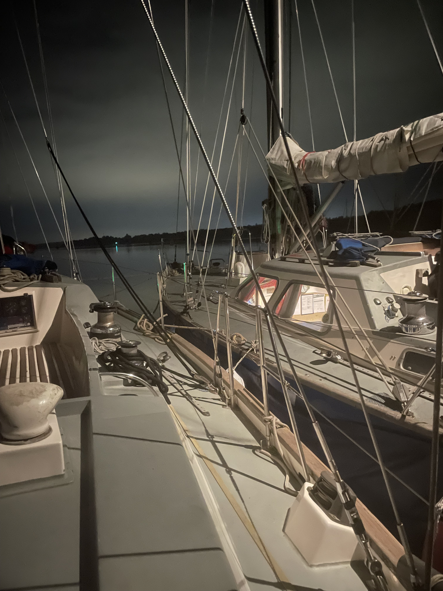
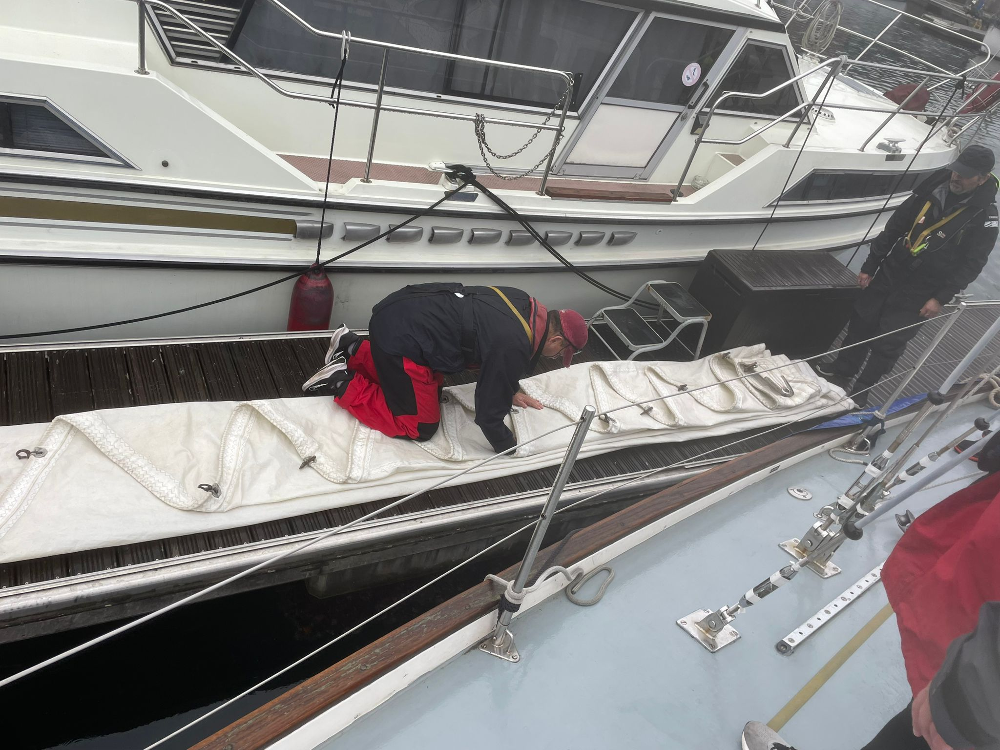
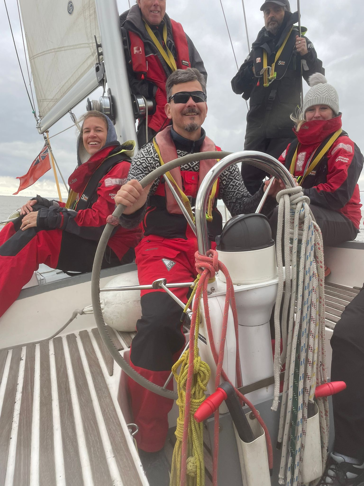
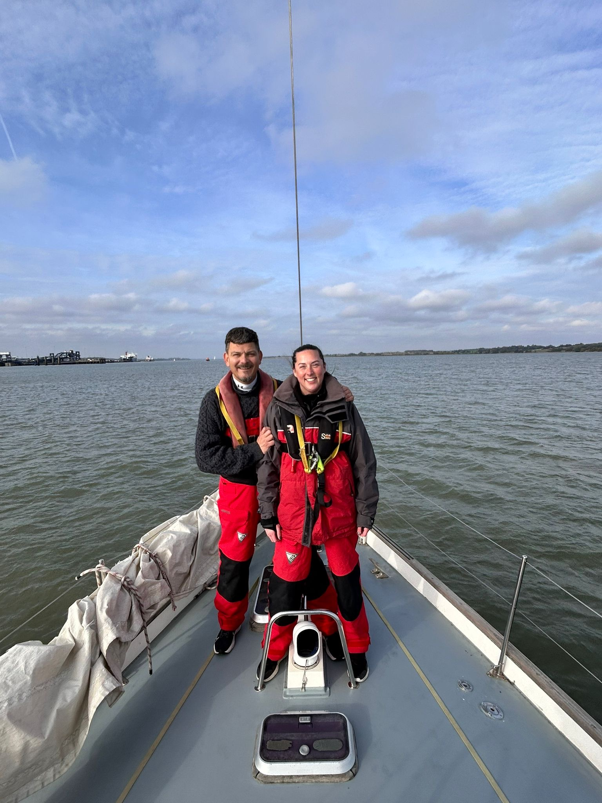
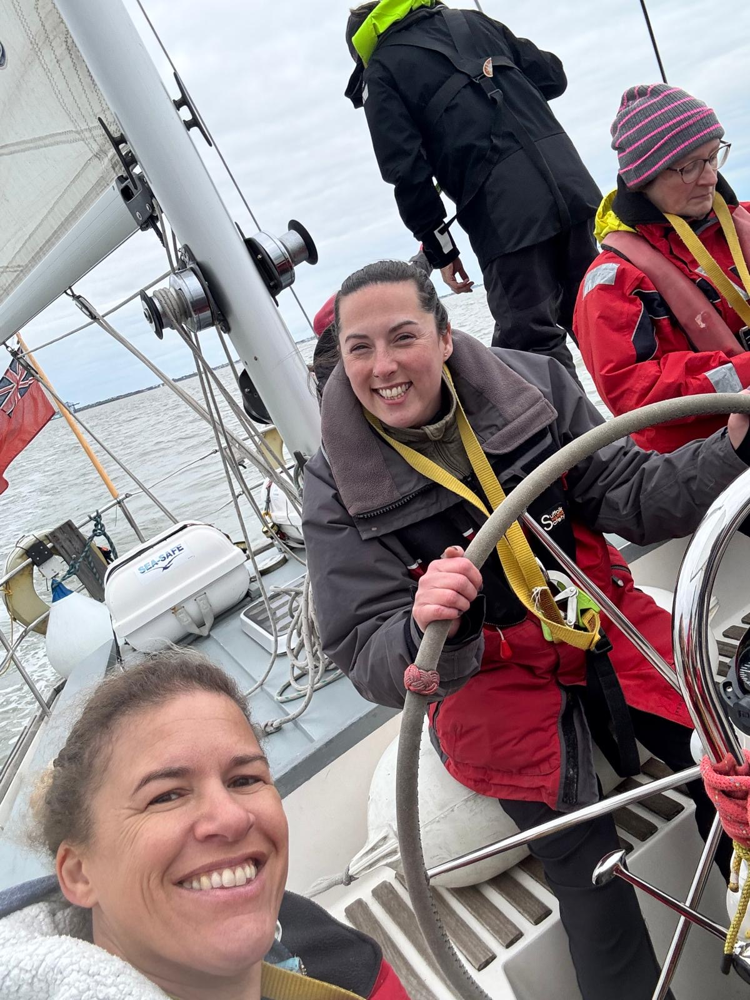
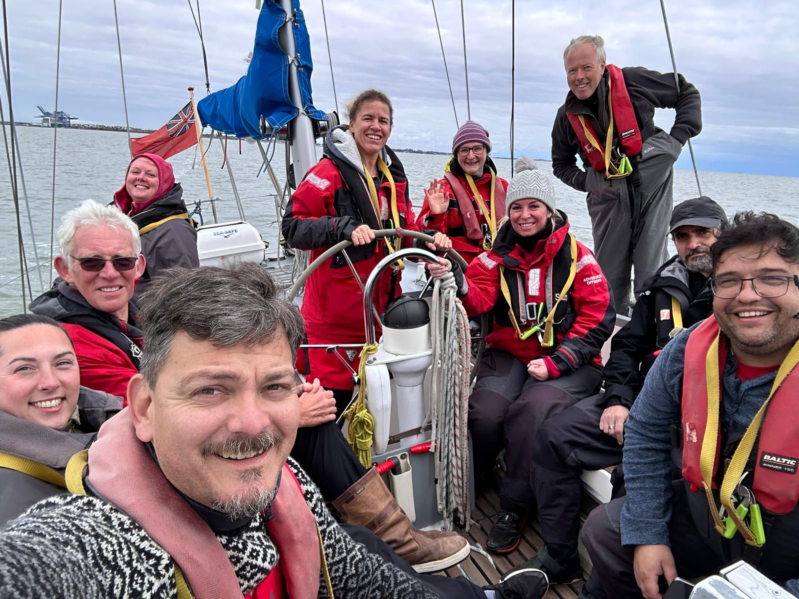

Photo Gallery










Offshore, a company running sailing voyages for young people and adults recently invited Scout Adult Volunteers from Essex to a taster sailing weekend as an opportunity to experience offshore sailing. Kim and I from 1st Stansted Cubs jumped at the chance to participate.
On Friday, 17 October at 19.00, we met the crew and the rest of the adult volunteers at our boat, Offshore Scout, at Ipswich Beacon Marina. We had a quick debrief, were shown our bunks, put on our waterproofs and life jackets, and set sail. We motored along the River Orwell for a while before mooring at a buoy for the night, later joined by Offshore's other sailing boat, Ocean Scout, which had a Scout section from Birmingham aboard. We spent the rest of the evening getting to know the rest of the crew and taking in the scenery while enjoying lots of tea and biscuits!
In the morning, we had a lovely breakfast of bacon and eggs before getting the boat ready to set off. We motored out to Felixstowe, then raised the sails and headed out to sea. We were lucky enough to raise three of the boat's six sails. We sailed to Clacton-on-Sea before turning round and heading to Harwich. Our Skipper also took this opportunity to teach us the man overboard procedure. As we headed into Harwich, we prepared the boat for docking. Once the boat was secured, we tidied up the sails and prepared our evening meal. There was then plenty of time to relax before heading to bed.
The next morning, we had breakfast and got ready to head out again. We motored out of Harwich along the River Stour, eventually being able to raise four sails this time! It was a particularly windy day, and we did lots of tacking/gybing (turning), which kept us busy. Eventually, it was time to return to Ipswich. All the sails had to be carefully packed away, the boat tidied and cleaned, and then we could all head home!
Throughout the weekend, the adult volunteers experienced everything sailing has to offer, including raising and lowering the sails, helming the boat, cooking, cleaning, and plenty of knot work! The Skipper Steve, 1st Mate Anna and 2nd Mate Alessandro were incredible. They made us feel so welcome and were always so patient when teaching us what to do. The weekend went by far too quickly, with many of us wanting to stay longer. We cannot wait to go back next year with our Cub Section so we can share this fantastic experience with them, and we highly recommend that other adult volunteers utilise this fantastic company with their young people!